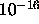

The number of epochs is not relevant when comparing SCG to other algorithms like standard backpropagation. Indeed one iteration in SCG needs the computation of two gradients, and one call to the error function, while one iteration in standard backpropagation needs the computation of one gradient and one call to the error function. Møller defines a complexity unit (cu) to be equivalent to the complexity of one forward passing of all patterns in the training set. Then computing the error costs 1 cu while computing the gradient can be estimated to cost 3 cu. According to Møller's metric, one iteration of SCG is as complex as around

iterations of standard backpropagation.Note: As the SNNS implementation of SCG is not very well optimized, the CPU time is not necessarily a good comparison criterion.